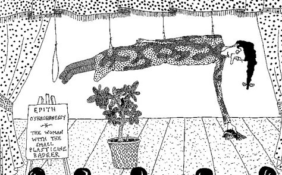

Wednesday, February the 4th, 2004
back to: title, date or indexes
My loathing of squirrels is a matter of public record. To my chagrin, less attention has been paid to my admiration of—indeed, devotion to—badgers, despite the fact that for many years I have been a Fledgling Satrap of the Blister Lane Institute of Badger Enthusiasts, and only last week was awarded a small, charming, albeit greasy, tin badge by our esteemed Director. The citation was ill-written and ungrammatical, probably because it was composed, under duress, by my arch-enemy Perkins, of whom more anon.
I recall clearly the most handsome badger I ever clapped eyes upon. It was sitting, or lying, or just generally disporting itself on the garden wall of a neighbour. It was so still that I assumed it was in a badger-like doze. The morning was, after all, grimly hot. I ran into my house (The Dobson Compound) to fetch a camera, intending to take a snapshot to add to my album of over seventeen badger photographs. When I returned, panting, the badger was still still. I approached closer. Imagine my disappointment when I discovered that the badger was in fact made of plasticine! It had been abandoned by that tiresome variety artiste Edith O'Shaughnessy (see below).

Source : Things Beginning with B, My Hatred of Squirrels, & Hedy Lamarr : Scientist by Dobson (signed, limited edition of 12 pamphlets, spineless, crumpled, out of print).